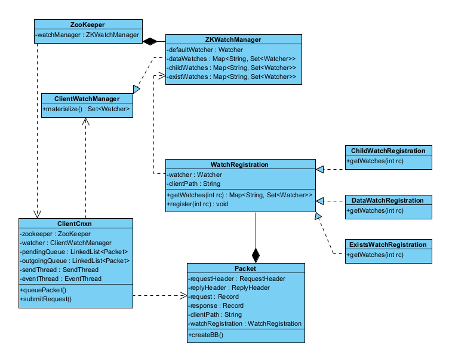
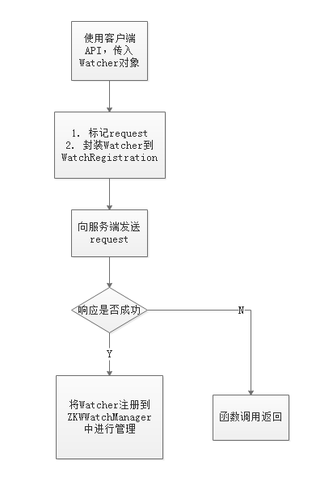
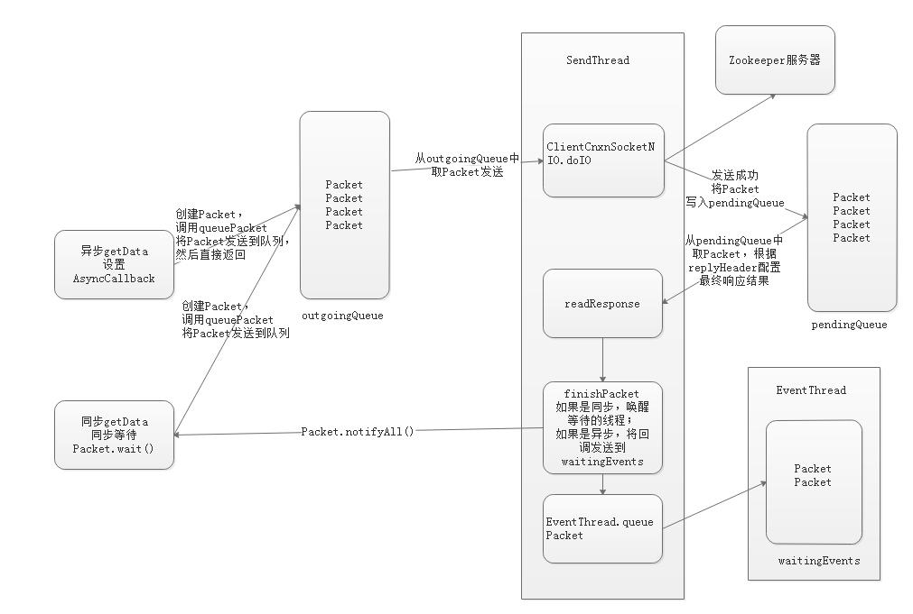

前言
初学 Zookeeper 会发现客户端有两种回调方式： Watcher 和 AsyncCallback，而 Zookeeper 的使用是离不开这两种方式的，搞清楚它们之间的区别与实现显得尤为重要。本文将围绕下面几个方面展开
- Watcher 和 AsyncCallback 的区别
- Watcher 的回调实现
- AsyncCallback 的回调实现
- IO 与事件处理
Watcher 和 AsyncCallback 的区别
我们先通过一个例子来感受一下：
zooKeeper.getData(root, new Watcher() {
public void process(WatchedEvent event) {
}
}, new AsyncCallback.DataCallback() {
public void processResult(int rc, String path, Object ctx, byte[] data, Stat stat) {
}
}, null);
可以看到，getData方法可以同时设置两个回调：Watcher 和 AsyncCallback，同样是回调，它们的区别是什么呢？要解决这个问题，我们就得从这两个接口的功能入手。
Watcher：Watcher是用于监听节点，session 状态的，比如getData对数据节点a设置了watcher，那么当a的数据内容发生改变时，客户端会收到NodeDataChanged通知，然后进行watcher的回调。AsyncCallback:AsyncCallback是在以异步方式使用 ZooKeeper API 时，用于处理返回结果的。例如：getData同步调用的版本是：byte[] getData(String path, boolean watch,Stat stat)，异步调用的版本是：void getData(String path,Watcher watcher,AsyncCallback.DataCallback cb,Object ctx)，可以看到，前者是直接返回获取的结果，后者是通过AsyncCallback回调处理结果的。
Watcher
Watcher 主要是通过ClientWatchManager进行管理的。下面是 Watcher 相关类图

添加 Watcher 的流程如下：

Watcher 的类型
ClientWatchManager中有四种Watcher
defaultWatcher：创建Zookeeper连接时传入的Watcher，用于监听 session 状态dataWatches：存放getData传入的WatcherexistWatches：存放exists传入的Watcher，如果节点已存在，则Watcher会被添加到dataWatcheschildWatches：存放getChildren传入的Watcher
从代码上可以发现，监听器是存在HashMap中的，key是节点名称path，value是Set<Watcher>
private final Map<String, Set<Watcher>> dataWatches =
new HashMap<String, Set<Watcher>>();
private final Map<String, Set<Watcher>> existWatches =
new HashMap<String, Set<Watcher>>();
private final Map<String, Set<Watcher>> childWatches =
new HashMap<String, Set<Watcher>>();
private volatile Watcher defaultWatcher;
通知的状态类型与事件类型
在Watcher接口中，已经定义了所有的状态类型和事件类型
KeeperState.Disconnected(0)
此时客户端处于断开连接状态，和ZK集群都没有建立连接。
EventType.None(-1)
触发条件：一般是在与服务器断开连接的时候，客户端会收到这个事件。
KeeperState. SyncConnected(3)
此时客户端处于连接状态
EventType.None(-1)
触发条件：客户端与服务器成功建立会话之后，会收到这个通知。
EventType. NodeCreated (1)
触发条件：所关注的节点被创建。
EventType. NodeDeleted (2)
触发条件：所关注的节点被删除。
EventType. NodeDataChanged (3)
触发条件：所关注的节点的内容有更新。注意，这个地方说的内容是指数据的版本
号dataVersion。因此，即使使用相同的数据内容来更新，还是会收到这个事件通知的。无论如何，调用了更新接口，就一定会更新dataVersion的。EventType. NodeChildrenChanged (4)
触发条件：所关注的节点的子节点有变化。这里说的变化是指子节点的个数和组成，具体到子节点内容的变化是不会通知的。
KeeperState. AuthFailed(4)
认证失败
- EventType.None(-1)
KeeperState. Expired(-112)
session 超时
- EventType.None(-1)
materialize 方法
ClientWatchManager只有一个方法，那就是materialize，它根据事件类型type和path返回监听该节点的特定类型的Watcher。
public Set<Watcher> materialize(Watcher.Event.KeeperState state,
Watcher.Event.EventType type, String path);
核心逻辑如下：
type == None:返回所有Watcher，也就是说所有的Watcher都会被触发。如果disableAutoWatchReset == true且当前state != SyncConnected，那么还会清空Watcher，意味着移除所有在节点上的Watcher。type == NodeDataChanged | NodeCreated:返回监听path节点的dataWatches & existWatchestype == NodeChildrenChanged:返回监听path节点的childWatchestype == NodeDeleted:返回监听path节点的dataWatches | childWatches
每次返回都会从HashMap中移除节点对应的Watcher，例如：addTo(dataWatches.remove(clientPath), result);，这就是为什么Watcher是一次性的原因（defaultWatcher除外）。值得注意的是，由于使用的是HashSet存储Watcher，重复添加同一个实例的Watcher也只会被触发一次。
AsyncCallback
Zookeeper 的exists,getData,getChildren方法都有异步的版本，它们与同步方法的区别仅仅在于是否等待响应，底层发送都是通过sendThread异步发送的。下面我们用一幅图来说明：

上面的图展示了同步/异步调用getData的流程，其他方法也是类似的。
IO 与事件处理
Zookeeper 客户端会启动两个常驻线程
SendThread：负责 IO 操作，包括发送，接受响应，发送 ping 等。EventThread：负责处理事件，执行回调函数。

readResponse
readResponse是SendThread处理响应的核心函数，核心逻辑如下：
- 接受服务器的响应，并反序列化出
ReplyHeader： 有一个单独的线程SendThread，负责接收服务器端的响应。假设接受到的服务器传递过来的字节流是incomingBuffer，那么就将这个incomingBuffer反序列化为ReplyHeader。 判断响应类型：判断
ReplyHeader是Watcher响应还是AsyncCallback响应：ReplyHeader.getXid()存储了响应类型。- 如果是
Watcher类型响应：从ReplyHeader中创建WatchedEvent，WatchedEvent里面存储了节点的路径，然后去WatcherManager中找到和这个节点相关联的所有Watcher，将他们写入到EventThread的waitingEvents中。 - 如果是
AsyncCallback类型响应：从ReplyHeader中读取response，这个response描述了是Exists，setData，getData，getChildren，create.....中的哪一个异步回调。从pendingQueue中拿到Packet，Packet中的cb存储了AsyncCallback，也就是异步 API 的结果回调。最后将Packet写入到EventThread的waitingEvents中。
- 如果是
processEvent
processEvent是EventThread处理事件核心函数，核心逻辑如下：
- 如果
event instanceof WatcherSetEventPair，取出pair中的Watchers，逐个调用watcher.process(pair.event) - 否则
event为AsyncCallback，根据p.response判断为哪种响应类型，执行响应的回调processResult。
可见，Watcher和AsyncCallback都是由EventThread处理的，通过processEvent进行区分处理。
总结
Zookeeper 客户端中Watcher和AsyncCallback都是异步回调的方式，但它们回调的时机是不一样的，前者是由服务器发送事件触发客户端回调，后者是在执行了请求后得到响应后客户端主动触发的。它们的共同点在于都需要在获取了服务器响应之后，由SendThread写入EventThread的waitingEvents中，然后由EventThread逐个从事件队列中获取并处理。
参考资料
ZooKeeper个人笔记客户端watcher和AsycCallback回调
【ZooKeeper Notes 13】ZooKeeper Watcher的事件通知类型